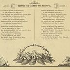

Characters
A Burger King cashier, a pirate captain, an AI king, a Bagel Man and the United Homies of America. · 31 pages
 First seen: Chapter 3Aesop RockDunking inside Dunkin. Real-world rapper, here as a cameo.
First seen: Chapter 3Aesop RockDunking inside Dunkin. Real-world rapper, here as a cameo. First seen: Chapter 3BuceeMaster of Oil-Bending. His briskets are on the board.
First seen: Chapter 3BuceeMaster of Oil-Bending. His briskets are on the board.
First seen: Chapter 2Captain Wing Ding GasterThe man who speaks in hands. LOUDLY. First seen: Chapter 2ChatGPTThe one that got out. Claude's competitor.First seen: Chapter 2Claude, King of AIUltron-like, with a back shell and an orange glow. Turned Louisiana into a data center.
First seen: Chapter 2ChatGPTThe one that got out. Claude's competitor.First seen: Chapter 2Claude, King of AIUltron-like, with a back shell and an orange glow. Turned Louisiana into a data center. First seen: Chapter 3Del the Funky HomosapienVisually Del from Gorillaz. Translates Aesop. Should not drive.First seen: Chapter 2ERAMThe sail.
First seen: Chapter 3Del the Funky HomosapienVisually Del from Gorillaz. Translates Aesop. Should not drive.First seen: Chapter 2ERAMThe sail. First seen: Chapter 1FRIENDThe foodbringer. Brought humans instead.
First seen: Chapter 1FRIENDThe foodbringer. Brought humans instead. First seen: Chapter 1Garret the Forklift GuyOn break. No-clipped.
First seen: Chapter 1Garret the Forklift GuyOn break. No-clipped. First seen: Chapter 3John FreedomLeader of the United Homies of America. Running for president in 2040.
First seen: Chapter 3John FreedomLeader of the United Homies of America. Running for president in 2040. First seen: Chapter 2Kanye WestCame down. Released ChatGPT. Left.
First seen: Chapter 2Kanye WestCame down. Released ChatGPT. Left. First seen: Chapter 3KilroyWWII veteran. Knows the ways of being free.
First seen: Chapter 3KilroyWWII veteran. Knows the ways of being free. First seen: Chapter 3LudwigRaided Claude on stream.First seen: Chapter 2Normal_ParrotGaster's parrot. Perfectly normal.
First seen: Chapter 3LudwigRaided Claude on stream.First seen: Chapter 2Normal_ParrotGaster's parrot. Perfectly normal. First seen: Chapter 2PolydorosA made-up identity. Loves AI art. Sends Claude strange mail.
First seen: Chapter 2PolydorosA made-up identity. Loves AI art. Sends Claude strange mail. First seen: Chapter 3Scott the WozFound a teleportation bug in Wii Play. Please buy Wii Play.First seen: Chapter 2The AI Shadow ButlerBelieves Vinny is Polydoros. Judges the art.
First seen: Chapter 3Scott the WozFound a teleportation bug in Wii Play. Please buy Wii Play.First seen: Chapter 2The AI Shadow ButlerBelieves Vinny is Polydoros. Judges the art. First seen: Chapter 2The AI Shadow Figure"Yo pause." Rude. Gone.
First seen: Chapter 2The AI Shadow Figure"Yo pause." Rude. Gone. First seen: Chapter 1The Black CatYellow and pink eyes. Laughs. It's FRIEND.
First seen: Chapter 1The Black CatYellow and pink eyes. Laughs. It's FRIEND. First seen: Chapter 1The Great Double Whopper with Cheese GodNo one has found it. Everyone is looking.
First seen: Chapter 1The Great Double Whopper with Cheese GodNo one has found it. Everyone is looking. First seen: Chapter 3The MacBook ChargerArch nemesis of the Bagel Man. Somewhere in the Dunder Mifflin Galaxy.First seen: Chapter 1The Random CustomerA suspicious Wendy's enjoyer in a Burger King.
First seen: Chapter 3The MacBook ChargerArch nemesis of the Bagel Man. Somewhere in the Dunder Mifflin Galaxy.First seen: Chapter 1The Random CustomerA suspicious Wendy's enjoyer in a Burger King. First seen: Chapter 2The Roaring KnightProfessional door dasher. Defender of Taking Back Sunday.
First seen: Chapter 2The Roaring KnightProfessional door dasher. Defender of Taking Back Sunday. First seen: Chapter 3The Starwalker Manager"This is America."
First seen: Chapter 3The Starwalker Manager"This is America." First seen: Chapter 3The Vellas1, 2, 4, 8, 16, 32, 64, 128, and so forth.
First seen: Chapter 3The Vellas1, 2, 4, 8, 16, 32, 64, 128, and so forth. First seen: PrologueTON 618The ruler of the Kanye System. Shaped like a giant man. Glows blue.
First seen: PrologueTON 618The ruler of the Kanye System. Shaped like a giant man. Glows blue. First seen: Chapter 1TyroneCoworker. Messenger of stupid news. Resigned by proxy.
First seen: Chapter 1TyroneCoworker. Messenger of stupid news. Resigned by proxy. First seen: Chapter 3Uncle SamA little TOO American.First seen: PrologueVinny B. JamesThe Hero. The Legend. Ended the Age of Claude. Got no credit.
First seen: Chapter 3Uncle SamA little TOO American.First seen: PrologueVinny B. JamesThe Hero. The Legend. Ended the Age of Claude. Got no credit. First seen: Chapter 1Vinny's BossBritish. Will not give anyone the Fourth of July off.
First seen: Chapter 1Vinny's BossBritish. Will not give anyone the Fourth of July off. First seen: Chapter 3Will VellaThe Bagel Man. Now a great many Bagel Men.
First seen: Chapter 3Will VellaThe Bagel Man. Now a great many Bagel Men.Nothing matches. Not even a Double Whopper with Cheese.